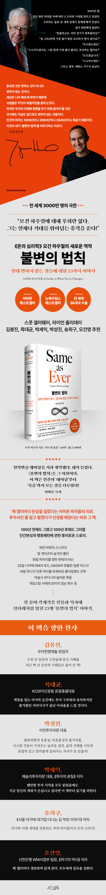

불변의 법칙
세계적인 베스트셀러 『돈의 심리학』 저자 모건 하우절이 3년 만에 낸 신작.
변하는 것에 집중하다 놓치게 되는 변하지 않는 것들의 중요성을 전한다.
다양한 사례에 재미와 교훈을 담아내는 저자의 이야기에 인간의 본성과
세상의 이치를 더한 놀라운 통찰을 만나보자
품목정보
| 발행일 | 2024년 02월 28일 |
|---|---|
| 판형 | 양장 |
| 쪽수, 무게, 크기 | 420쪽 | 588g | 145*217*25mm |
| ISBN13 | 9791198517425 |
| ISBN10 | 1198517425 |
책소개
세계적인 베스트셀러 『돈의 심리학』의 저자 모건 하우절이 3년 만에 세상에 내놓은 신작.‘절대 변하지 않는 것들에 대한 23가지 이야기’를 전한다. 출간하자마자 아마존과 뉴욕타임스 베스트셀러 자리에 오르며 아마존 독자들과 오피니언 리더들의 극찬을 받았다. 이번 책은 돈과 투자 영역은 물론이고, 인간의 본성과 세상의 이치에 관한 이야기를 두루 다루어 한층 더 다층적이고 복합적인 메시지를 담아냈다는 평가를 받는다. 모건 하우절은 사람들은 무엇이 변할 것인지에 대해 늘 관심을 갖지만, 미래에 대비하기 위해서는 오히려 과거에도 지금도 미래에도 변함이 없는‘불변의 법칙’에 대해 알아야 한다고 강조한다. 이에 1000년 후에도 유효할 인간의 행동양식과 반복패턴에 대한 흥미로운 역사 스토리와 일화들을 들려준다. 워런 버핏의 스니커즈, 빌 게이츠의 숨겨진 불안, 유발 하라리가 받은 뜻밖의 비난, 게임스탑 사태의 보이지 않는 변수, 벌지 전투의 최후, 마술사 후디니의 죽음 등, 한 편 한 편의 이야기가 마치 다큐소설처럼 펼쳐진다. 흥미로운 일화 속에 인간사를 꿰뚫는 통찰과 삶의 교훈을 구슬처럼 꿰어내어 “역시 모건 하우절이다”라는 찬사를 받았다. 스콧 갤러웨이, 라이온 홀리데이는 물론, 국내 유수의 리더들 또한 먼저 읽고 “대단한 책이다”라는 평가를 내놓았다.
목차
서문 인생의 작은 법칙들
1.이토록 아슬아슬한 세상- 지나온 과거를 돌아보면, 앞으로의 미래는 알 수 없단 사실을 깨닫게 된다.?
2. 보이지 않는 것, 리스크
- 사실 우리는 미래를 예측하는 능력이 꽤 뛰어나다. 다만 놀라운 뜻밖의 일을 예측하지 못할 뿐이다. 그리고 그것이 모든 걸 좌우하곤 한다.
3. 기대치와 현실
- 행복을 위한 제1원칙은 기대치를 낮추는 것이다.
4. 인간, 그 알 수 없는 존재
- 독특하지만 훌륭한 특성을 가진 사람은 독특하지만 훌륭하지 않은 특성도 함께 갖고 있다.
5. 확률과 확실성
- 사람들이 원하는 것은 정확한 정보가 아니다. 사람들이 원하는 것은 확실성이다.
6. 뛰어난 스토리가 승리한다
- 스토리는 언제나 통계보다 힘이 세다.
7. 통계가 놓치는 것
- 측정할 수 없는 힘들이 세상을 움직인다.
8. 평화가 혼돈의 씨앗을 뿌린다
- 시장이 미친 듯이 과열되는 것은 고장 났다는 의미가 아니다.
미친 듯한 과열은 정상이다. 더 미친 듯이 과열되는 것도 정상이다.
9. 더 많이, 더 빨리
- 좋은 아이디어라도 무리한 속도를 내면 나쁜 아이디어가 된다.
10. 마법이 일어나는 순간
- 고통은 평화와 달리 집중력을 발휘시킨다.

상세이미지

책 속으로
역사를 보면 세상이 얼마나 아슬아슬한 곳인지 깨닫게 된다. 때로 역사의 흐름을 바꾼 중대한 사건은 전혀 예상치 못한 접촉이나 별생각 없이 무심코 내린 결정 때문에 일어났다. 그것이 경이로운 결과를 낳기도 하고, 비극을 불러오기도 한다. 작가 팀 어번은 말했다. “만일 당신이 시간여행을 해서 태어나기 전의 세상으로 간다면 그 어떤 행동도 섣불리 하지 못할 것이다. 아주 사소한 행동 하나도 미래에 어마어마한 영향을 미칠 수 있음을 알기 때문이다.”
--- p.27, 「이토록 아슬아슬한 세상」중에서
역사를 들여다볼 때 느껴지는 아이러니가 있다. 스토리가 어떻게 끝나는지는 대개 알지만 그 스토리의 시작점은 알 수 없다는 사실이다. 예를 하나 들어보겠다. 무엇이 2008년 금융 위기를 일으켰을까? 그 답을 알려면 먼저 모기지 시장의 구조를 이해해야 한다. 그렇다면 모기지 시장에는 무엇이 영향을 미쳤을까? 그걸 이해하려면 이전 30년간 금리가 하락한 과정을 알아야 한다. 금리 하락을 초래한 요인은 무엇일까? 그걸 이해하려면 먼저 1970년대의 인플레이션을 알아야 한다. 1970년대의 인플레이션은 왜 일어났을까? 그걸 알려면 1970년대의 통화 제도와 베트남전쟁의 영향을 들여다봐야 한다. 베트남전쟁은 왜 일어났을까? 그걸 이해하려면 제2차 세계대전 이후 냉전을 거치며 미국인들이 공산주의에 공포심을 갖게 된 과정을 알아야 한다. 이런 식으로 짚어 올라가면 꼬리에 꼬리를 물고 끝도 없이 계속된다.
--- p.40, 「이토록 아슬아슬한 세상」중에서
NASA는 지구상에서 가장 계획적이고 철저한 조직이라 해도 과언이 아니다. 거기다 그저 두 손 모으고 잘되기를 기도한다고 인간을 달에 보낼 수 있는 것은 아니니 더욱 철두철미하게 준비했을 것이다. NASA는 상상 가능한 모든 리스크에 플랜 A와 플랜 B, 심지어 플랜 C까지 세웠다. 하지만 그럼에도 아무도 생각하지 못한 아주 작은 실수 하나가 재앙을 불러왔다. 재무 설계사 칼 리처즈는 다음과 같이 말했다. “당신이 모든 시나리오를 남김없이 고려했다고 생각한 후에 남는 것이 리스크다.”
--- p.49, 「보이지 않는 것, 리스크」중에서
장담하건대, 앞으로도 여전히 그럴 것이다. 향후 10년간 나타날 가장 큰 리스크와 가장 중요한 뉴스는 지금 아무도 언급하지 않는 무언가일 것이다. 당신이 이 책을 읽고 있는 때가몇 년도이든 마찬가지다. 내가 이것을 자신 있게 말할 수 있는 이유는 지금까지 늘 그래왔기 때문이다. 예측할 수 없다는 속성이 리스크를 위험한 것으로 만든다.
--- p.53, 「보이지 않는 것, 리스크」중에서
누군가가 어떤 일이 일어날 거라고 말했는데 실제로 일어나면, 그 사람의 예측이 옳은 것이다. 누군가가 어떤 일이 일어날 거라고 말했는데 일어나지 않으면, 그 사람의 예측이 틀린 것이다. 사람들은 이런 식으로만 생각한다. 그렇게 생각하는 것이 정신적 에너지가 덜 들어가고 편하기 때문이다. 눈앞에 실제 결과가 나와 있는 상태에서 어쩌면 다른 결과가 나올 수도 있었다는 사실을 사람들에게(또는 자기 자신에게)납득시키기는 어렵다. 포인트는 이것이다. 사람들은 자신이 미래를 바라보는 정확한 관점을 원한다고 믿지만, 사실 그들이 정말로 원하는 것은 확실성이다.
--- p.102, 「확률과 확실성」중에서
‘100년 만의’라는 수식어가 붙는 사건을 생각해보자. 100년만의 홍수, 허리케인, 지진, 금융 위기, 사기, 전염병, 정치적 붕괴, 경기 침체 등등. 수많은 끔찍한 사건을 100년 만의 사건이라고 부를 수 있다.‘100년 만의 사건’이란 100년에 한 번씩 일어난다는 뜻이 아니다. 어느 해에든 그 사건이 발생할 확률이 약 1퍼센트라는 의미다. 이는 낮은 확률로 느껴진다. 하지만 수백 가지의 개별적인 100년 만의 사건들이 있다면, 특정한 해에 그중 하나가 발생할 확률은 얼마나 될까? 꽤 높다.
--- p.106, 「확률과 확실성」중에서
완벽한 세상에서라면 정보의 중요성이 그 정보 전달자의 스토리텔링 능력에 의존하지 않는다. 그러나 우리가 살고 있는 이 세상 사람들은 쉽게 지루함을 느끼고, 인내심이 부족하며, 감정에 쉽게 지배당하고, 복잡한 정보가 마치 스토리의 한 장면처럼 이해하기 쉬워지기를 원한다. 주변을 찬찬히 살펴보자. 정보가 오고가는 어떤 상황에서든, 즉 제품, 기업, 정치, 지식, 교육, 문화가 있는 곳이면 어디서든 뛰어난 스토리가 승리한다. 스티븐 호킹은 자신의 물리학 저서들을 두고 이렇게 말한 적이 있다. “누군가 내게 그러더군요. 책에 방정식이 하나 늘어날 때마다 판매량이 절반으로 줄 것이라고요.” 독자들이 원하는 것은 지루한 강의가 아니라 기억에 남는 스토리다.
-pp. 129-130, 「뛰어난 스토리가 승리한다」중에서
역사학자 스티븐 앰브로즈는 1944년 말 당시 미군 사령관 드와이트 아이젠하워와 오마 브래들리가 전시 전략 수립에 필요한 최고의 이성적 판단력을 갖추고 있었지만 딱 한 가지 디테일을 놓쳤다고 말한다. 그것은 히틀러가 얼마만큼 미치광이였느냐 하는 점이었다. 브래들리의 한 측근은 당시 이렇게 말했다. “만일 우리가 합리적 인간들을 상대로 싸웠다면 그들은 이미 한참 전에 투항했을 것이다.” 하지만 그들은 합리적 인간이 아니었다. 그리고 그 사실, 즉 논리와 이성으로 측정하기 힘든 그 사실이 모든 것을 좌우했다.
--- p.146, 「통계가 놓치는 것」중에서
2008년 9월 10일 리먼브라더스의 재무 건전성은 양호해 보였다. 이 은행의 자기자본비율(금융기관의 손실감수 능력을 평가하는 지표다)은 11.7퍼센트였다. 이는 이전 분기보다 높은 수치였다. 골드만삭스나 뱅크오브아메리카보다도 높았다. 그것은 금융 업계가 호황이었던 2007년 리먼브라더스의 자기자본비율보다 높은 수치였다. 그리고 72시간 뒤, 리먼브라더스는 파산했다.그 3일 동안 변화한 유일한 것은 이 은행에 대한 투자자들의 신뢰였다.
--- p.152, 「통계가 놓치는 것」중에서
하나의 결과는 또 다른 결과를 낳았다. 성장 목표 수치를 달성하려는 욕구가 결국 합리적 분석과 판단을 밀어냈다. 스타벅스 매장의 포화 상태는 도를 넘었다. 경제 호황기였음에도 동일 매장 매출 성장률이 50퍼센트 감소했다. 하워드 슐츠는 2007년 경영진에게 보낸 메일에 이렇게 썼다. “1,000개도 안 되던 매장이 1만 3,000개로 늘어나는 동안 우리는 일련의 결정을 내렸고 지금 되돌아보면 그 결정들이 ‘스타벅스 경험’을 희석했습니다.”
--- p.186, 「더 많이, 더 빨리」중에서